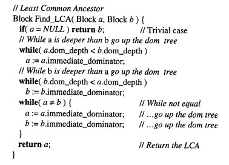

Mips-编译优化总结
优化实现概览
前端
- 函数内联
中端
- 单赋值形式
- 全局代码移动
- 全局值编号
- 全局常量折叠
- 代数恒等变换
- 等价指令变换
- 激进死代码删除
- 基本块合并
后端
- 全局寄存器图着色分配
- 局部寄存器OPT分配
- 立即数乘除优化
- 指令选择优化
- 寄存器选择优化
具体优化实现
函数内联
实现方式
函数内联有两种实现方式：
- 写在中端，将函数基本块插入
Call的位置，删除Call语句，处理Return，变量重命名。 - 写在前端，在生成中间代码时如果遇到了
Call节点，直接生成一遍该Call调用函数的中间代码。难点与解决方案
第一种是最开始想到的方案，好处是可以插入优化后的函数，但比较大的问题是变量的重命名，处理起来比较麻烦，稍有不慎就会出错。
因此我们选择第二种方案作为解决方案，由于中间代码生成的过程本来就是在不断的创建变量、使用变量，将内联做到此处可以让其和正常的代码归一处理，只需要考虑该函数是否适合内联即可。
如图，ToIntermediate即为我在语法树生成中间代码的方法，在这里展示的是CallNode中的ToIntermediate，在这里我调用了FuncDefNode的ToIntermediate将其内联到了代码中。
需要注意的一点是，第二种方法同样有着缺陷，做在了前端意味着我们做在了优化之前，而我们编译的语言中，函数传递为值传递，内联进去后我们仍然要保持这个特性，即在内联函数中，我们对参数的修改不能最终被优化为对传参变量的修改。这需要特殊判断，因此我引入了图中的OptWhiteList，将实参赋值给形参这种语句加入白名单，使其不被优化，这样会导致后续对形参的所有赋值均不会被优化到直接对原变量赋值。
单赋值形式
实现方式
我参考了课程设计网站的MemToReg，和虎书的dominate计算。
难点和解决方案
由于前人在此做了太多的努力与积累，这里几乎不存在什么难点，按照给定的伪代码理解然后实现即可，主要就是时间投入的问题。
不过如果想要理解这些这些伪代码背后的原理和作用，可能需要结合编译理论的学习和参考虎书。
全局值编号
实现方式
我参考了Cliff Click的Global Code Motion Global Value Numbering这篇论文，按照其给出的伪代码进行实现。
难点和解决方案
难点
全局值编号的实现Cliff Click没有给予具体的实现伪代码，需要我们自行设计实现。且单全局值编号并不会给我们的代码起到什么优化作用，我们一般要同时实现在此情景下的常量折叠、代数恒等变换、等价指令变换。
其次，并不是每一条中间代码、每一种变量都适合进行三种优化，例如对刚才内联中提到的白名单内的中间代码，我们就只适合对其进行常量折叠。再比如我们不适合对全局变量进行优化，否则会导致值错误。
然后，访问块的顺序也是需要考量的，访问顺序不当会出现诸如用后面的变量替换前面的变量导致段错误等诸多问题。
最后，我们需要防止优化陷入循环，导致优化不能正常退出的问题产生。
解决方案
这是我将三种优化结合到一起的函数，先尝试折叠，再尝试代数恒等变换，最后再尝试等价指令变换。
同样，这里的if else也展示了我对于不同指令的处理方式有所不同，解决第二个问题的指令选择性优化，之后在具体优化的方法中检测变量类型，如果是全局就不进行优化，解决变量选择性优化问题。
其次是访问顺序问题，RPO（逆后序遍历）其实就是对树进行后序遍历的反向输出。我们只需用DFS来后序遍历树，最后反向输出即可得到RPO序列，采用这种方式进行的遍历我们可以保证访问子节点时父节点一定先被访问过。
最后的陷入循环主要通过两方面解决：
- 指定我们期望的优化结果：常量为先/变换为先。这样不会出现常量和变换干扰互相死循环转化的问题。
- 下一个优化使用上一个优化的结果进行优化，即图中展示的
element。
全局代码移动
实现方式
我参考了Cliff Click的Global Code Motion Global Value Numbering这篇论文，按照其给出的伪代码进行实现。
难点和解决方案
难点
Cliff Click在论文中给出的伪代码有误，需要结合其语言描述进行正确化。不能盲目实现其伪代码。这就需要一定的英文阅读能力+理解能力。
全局代码移动需要极其严苛的正确性，这是因为对代码的移动本来就是一个高危行为，且全局值编号的优化几乎100%会破坏程序的正确性，需要全局代码移动来修复正确性，所以全局代码移动的正确实现就极为关键。
全局代码移动依然要考虑某种指令能否移动的问题。这需要小心操作。
解决方案

Cliff Click这里给出的伪代码有误，注释强调a is deeper than b，但是代码却是a.dom_depth < b.dom_depth，需要理解并修改。（当然可能是我能力不够）
为保证正确实现，至少需要保证理解全局代码移动的原理和正确性。此可以通过慢慢阅读论文，慢慢理解来最终达到。
指令是否移动，我最终设计了如下不能移动的指令类：
- jump和返回指令不可移动
- phi指令不可移动
- branch指令不可移动
- call和push指令不可移动
- 返回值赋值语句不可移动
- 输入语句不可移动
- store语句不可移动
- load语句不可移动
- Global赋值语句不可移动
- Global使用语句不可移动
简要说明一下不太好理解的：
- call和push因为涉及其他函数，我们不能保证在不同位置执行外部指令流会不会出现差异，所以不移动。
- 由于
$v0的不可靠性，我在函数每次返回后都会立刻将返回值存到一个临时变量里，这个指令显然不能移动，必须时刻跟在call后。 - store和load涉及内存读写，同样的，我们不能保证在不同位置对内存读写会不会和原指令流产生差异，所以不移动。
- Global因为在别的函数中同样使用，所以也不能保证在不同位置执行外部指令流会不会出现差异。
激进死代码删除
实现方式
参考了课程网站思路和激进死代码删除这篇文章。
难点
控制依赖的引入：要实现激进的死代码删除，需要我们实现控制依赖的计算，这又引入了新的复杂度。
控制流的改变：在我的实现中，我会对无用的控制流语句进行删除，改变了控制结构，这显然也是十分危险的动作，且每次修改都会导致已经建立好的流图失效，但一次优化中会多次利用到流图的信息。如何保证改变前后的控制结构等价且维护流图是一个问题。
解决方案
学习控制依赖，有一篇文章很生动形象：零基础入门控制依赖图构建的理论与实践，通过这个我彻底理解了控制依赖的作用。
如图，对于一个基本块经过死代码分析后失效的控制流语句，会赋予一个新的跳转，跳到它的后继中第一个活跃的块上。需要在反支配树上寻找（反支配树就是根据CFG的反图建出的支配树）。
对流图的维护我采取了双重保险的形式：
- 改变控制流时维护当前流图的前驱后继关系。
- 退出激进死代码优化时重新构建新的流图，舍去旧流图。
这样一定可以保证流图的正确性，虽然会引入一定的冗余。
基本块合并
实现方式
- 相邻块跳转，一定可以删去跳转语句。
- 检查该块（记为A）跳转指向的块的前驱是否只有一个（A），如果只有一个，那么可以合并这两个块。
难点
难点就是要想到上述的实现方式，特别是合并的条件，过度合并会导致问题的出现。
全局寄存器图着色
实现方式
虎书有更为精细复杂的图着色实现方式，可以减轻Move指令带来的负向优化。
时间原因，我采用了理论所学的图着色实现方式：
- def-use分析
- in-out分析
- 构建冲突图
- 启发式着色
难点
- 需要考虑着色的变量范围。
- 冲突的识别。
解决方案
- 全局变量不能参与图着色，最主要的问题是，图着色是不写回的，而全局寄存器显然需要写回，因为要在多个函数中用到。这从一开始就已经产生了冲突。
- 不跨块活跃的不参与图着色，对其的分配无意义。
- 冲突的识别不能仅仅参考
In-Out，需要用比较精细的分配方式——在a的定义点b活跃。这里就是一个仅仅参考In-Out导致分配错误的例子：
如果仅仅从In集分析，Variable_6_2一定与Variable_8_7不冲突，可以共用一个寄存器，图中的分配也是这么做的，但显然是错误的，这就是因为Variable_6_2和Variable_8_7其实是冲突的，这需要使用上述提到的精细的分析才能找出冲突。
局部寄存器OPT分配
实现方式
寄存器可以用Cache去理解，那么我们就可以参考Cache的分配方式。Cache有一个理想的分配方式——OPT分配，所有的分配算法都是为了接近这种分配，但是这种分配是不可能达到的，因为Cache不可能知道未来的信息。
但在编译的寄存器分配中，我们是可以知道的。因此我们可以实现Cache分配的极限——Opt优化。
替换寄存器时，我们可以向后查看该基本块对于变量的使用情况，替换掉最晚使用的寄存器。
难点
本身没有什么难度，难度来源于如果想让全局变量加入局部寄存器的分配，会引入很多的问题：
- 在原来的设计中，局部寄存器也不需要在退出基本块前写回，全局变量显然需要。
- 也正是由于有（1）的区别所在，所以在OPT分配的时候全局变量控制的局部寄存器和其他变量控制的局部寄存器是有区别的。引入了复杂度。
解决方案
- 添加写回逻辑，只针对寄存器分配的对线是全局寄存器时。
- OPT逻辑设计如下图(参考注释)
立即数乘除优化
实现方式
- 参考
Division by Invariant Integers using Multiplication - 参考课程网站教程
- 参考Yu-Ge编译器
难点
如果想要理解此优化，确实是极其消耗时间的事情。
解决方案
时间太过仓促，我也只是草草理解了一下就按照伪代码和参考Yu-Ge编译器进行了实现。
指令选择优化
实现方式
对mars需要展开的指令进行优化，尽量减轻展开量。
难点
如何寻找到更优秀的展开是一个问题。
解决方案
这和Mips指令强相关，今年我参加了龙芯Mips赛道，对此也有一定的理解，手动写了一些。
这和Mips指令强相关，因此我参考了前高阶计组助教——陈昊学长对此的优化。
例如对于常数的加载，就可以根据范围选择不同的加载方式。这里就涉及了Mips指令集中Offset=16等的知识。
寄存器选择优化
实现方式
主要是将加载0值到寄存器的操作直接使用$0替换。
难点
注意细心即可。
解决方案
多进行测试，避免写出问题。
写在最后
在竞速排名中，我的排名是第六。
说这个不是一个好的成绩有些过分，但实话说我还是对此有一定的遗憾，因为很多很棒的优化我因为时间的关系都没有实现，例如对于公开的测试用例，如果我做了循环优化，对那个用例的数组的运算完全可以优化到直接赋值的地步。又比如对于全局变量的初始化，完全可以借助.space进行初始化，这些都因为时间关系，在我的编译器中没有实现。
很多人说做优化性价比不高，因此大多都摆烂了，但对我来说，做优化是完全的出于兴趣，我觉得看着自己的目标代码逐渐瘦身，逐渐变得我都看不明白但就是正确的，是一件很酷的事情。但就是时间太过于紧张只能让我做出取舍。这让我感到遗憾。
不过，这也不是结束，这更像是一个开始。竞速第六便是一个很好的开始，希望以后还有机会，有更多的时间做这种类似的事情吧！
感谢一学期所有编译助教的辛苦付出，申哥的挽大厦之将倾，陈昊学长的分享与帮助。